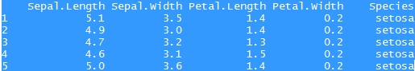
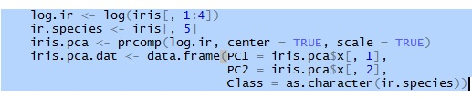

Let's check the data

Due to the non-negative feature, transform the numeric variables by logarithm first

Print and plot can be directly applied on the PCA object produced by prcomp function
Loadings and variance explained on each PC factors are printed and graphed